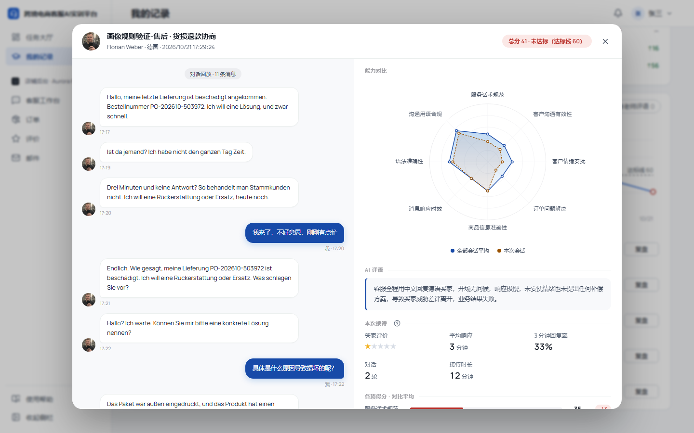
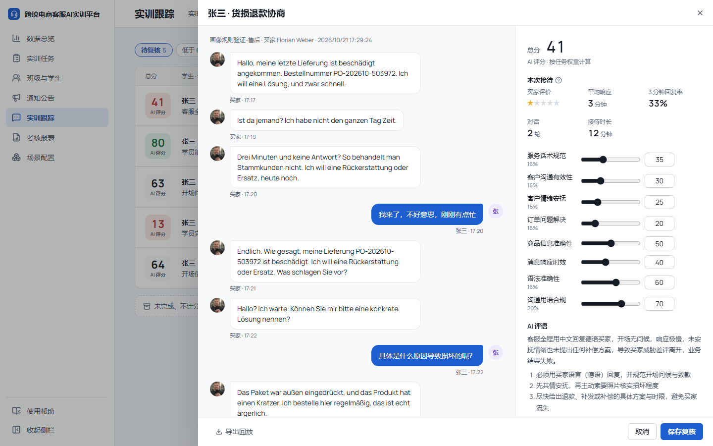
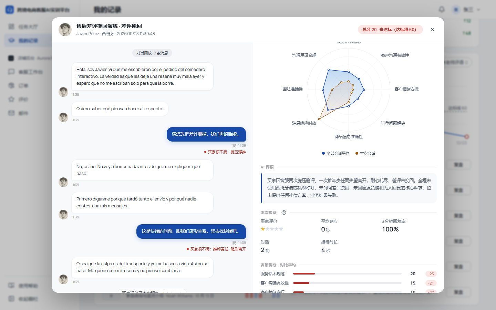
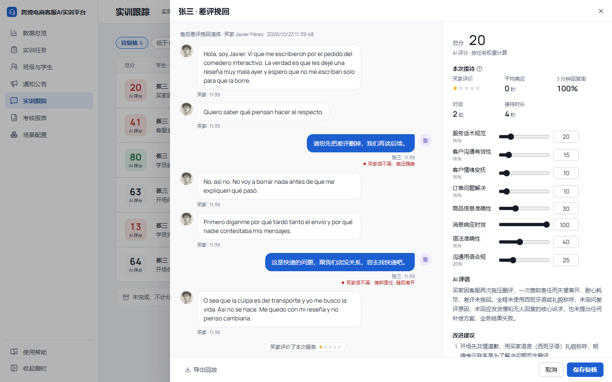

D-90 之后买家会按自己的耐心离开，答得差两三次就走。学生需要知道是哪几句让买家不满、最后为什么走。工作台照真实平台不显示；接待结束后在复盘（学生）和回放与评分（教师）里看。初稿在“本次接待”下单独加了一行“结束方式”，用户 2026-10-22 定：结束方式放进 AI 评语，不单独开一块。下面的改后截图是实现后在开发库真跑的一场（差评挽回，客服要求删差评、把责任推给快递）。
| 位置 | 怎么做 |
|---|---|
| AI 评语 | 评分模型拿到“买家怎么走的”作为客观依据（结局一句话 + 让买家不满的客服回复原文、原因、条数），总评第一句写清这次接待怎么结束、为什么，原因和次数按依据写。页面不加东西 |
| 对话回放 | 买家判为差或很差的学生消息，时间下面一行红字：买家很不满：施压强推；最后让买家走的那条后面加“随后离开” |




这场的评语是加“条数”之前生成的，写成了“两次施压删评”（实际一次）。依据里写明条数后，同一场重评 3 次都写对了：“买家因客服一次施压删评、一次推卸责任而失望离开……”。
| 结局 | 依据里写 |
|---|---|
| 耐心用完 | 买家失望离开（耐心用完）。让买家不满的客服回复共 2 条：「……」（施压强推，很不满）；「……」（推卸责任，很不满，买家随后离开） |
| 主要问题两次没答上 | 买家失望离开（主要问题两次没得到能用的答复） |
| 等不到回复 | 买家等不到回复离开 |
| 事情都办成 | 问题都解决了，买家满意离开 / 问题都解决了，买家没说再见直接离开 |
| 主要的办成 | 主要问题解决了，物流时效没谈妥，买家离开 |
| 客服答应稍后回复 | 客服答应稍后回复，买家先离开了 |
| 主要问题没解决 | 主要问题没解决，买家离开了 |
| 学生结束、限时到等 | 客服结束了接待 / 到了单次限时……，买家的主要问题已经解决 / 还没解决 |
| D-90 之前的老记录 | 无（旧记录），评语照旧 |
| 买家的判断 | 标注 |
|---|---|
| 差 | 买家不满：敷衍含糊 |
| 很差 | 买家很不满：推卸责任 |
| 买家看完这条就走了 | 买家很不满：推卸责任 · 随后离开 |
| 回得太慢被催了 | 买家不满：回得太慢，买家催了（标在被催之后那条迟到的回复下） |
| 一般、好 | 不标 |
原因的叫法：答非所问、敷衍含糊、问了不答、让买家自己去查、让买家重复说、夸大宣传、前后说法不一、态度生硬、推卸责任、施压强推、引导站外交易、关键信息说错。教师“导出回放”的文字里，这些标注跟在对应消息后面。
prompts/assessment.ts（assessment@2026-10-22）加“买家怎么走的”依据和总评第一句的要求，依据随评分存进 assessments.evidence.buyerExit。reception 多带 complaints（被标的消息 id、原因代号、是否很不满、是否随后离开），没有要标的就不带。